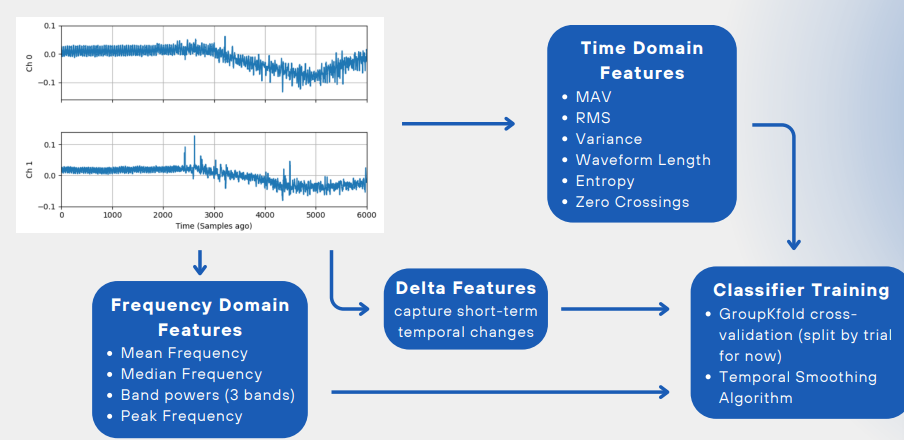
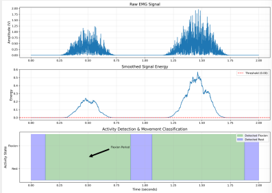
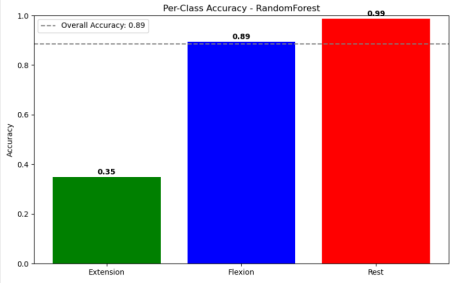

The problem
The project aimed to support rehabilitation exercises by recognising the movement a patient was performing from EMG signals and providing information about exercise intensity.
MyoBuddy connects those predictions to a desktop workflow with English and Portuguese instructions, exercise videos, visual/audio feedback and session reports. It also includes serial commands for a four-servo Arduino demonstration arm.
My contribution
I developed the machine-learning component responsible for identifying movement from EMG data. I worked on turning recorded signals into predictions that the desktop application could use during an exercise.
My focus was the link between the signal and the recognised action: preprocessing, feature extraction and classification that could support the exercise workflow. The shared application runs acquisition and inference in separate Qt threads.
From signal to prediction


The current training pipeline uses four EMG channels at a nominal 2 kHz, DC-offset correction, a 20–450 Hz band-pass and a 50 Hz notch. It extracts 250 ms windows with 75% overlap, combining amplitude, frequency, cross-channel and temporal-change features.
Model comparisons include random forest, SVM, logistic regression, gradient boosting and an MLP. Scaling sits inside each model pipeline, and GroupKFold separates trial-number groups. Predictions are smoothed over a short history before movement events are interpreted.
The application checks completed movement events against the expected exercise step. Cup, spoon, book and door-knob sequences connect individual classifications to a longer activity. The checked-in acquisition worker uses simulated or prerecorded data, providing a replay path for exploring the integration.
Results & limitations




This project showed me how classification errors can affect exercise feedback. The evaluation needs to describe the complete movement-detection system as well as the classifier.
The evaluation code considers detection rate, false activations and latency as well as window-level classification. Trial grouping does not establish performance on unseen participants. The public snapshot includes a model and replay recordings, but not the complete labelled training dataset or a reproducible final metric table.
Further integration work includes aligning offline and runtime feature calculations and reconciling the Grasp_Power classifier label with the application’s Grasp step. These details affect exercise progression even when the classifier itself produces a prediction.
Code & context
The README explains the model pipeline, replay workflow, desktop setup, reporting and Arduino protocol. This university prototype explores rehabilitation feedback; the available evidence does not establish clinical benefit.